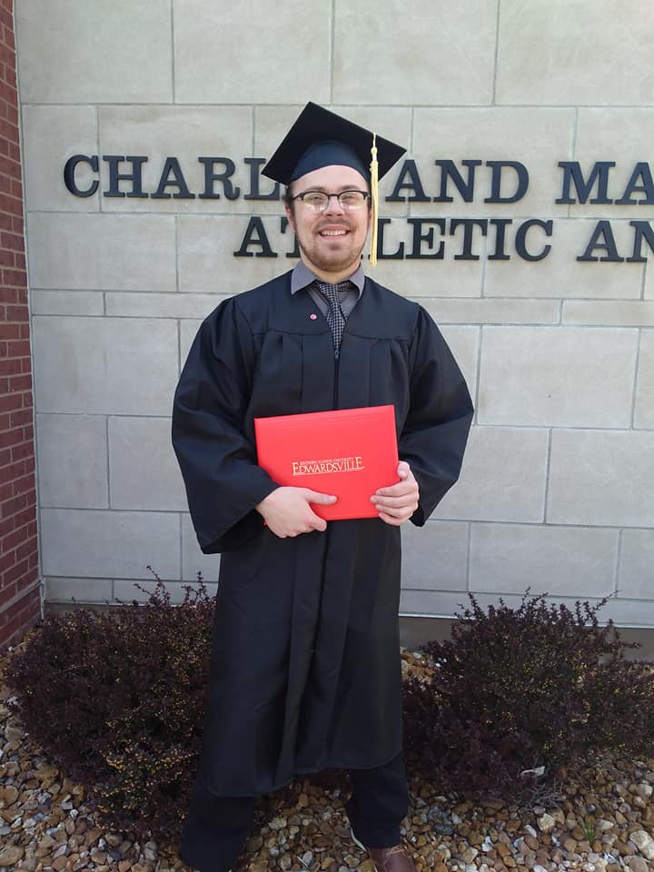
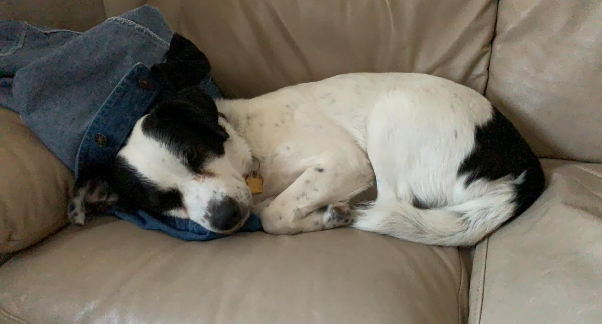
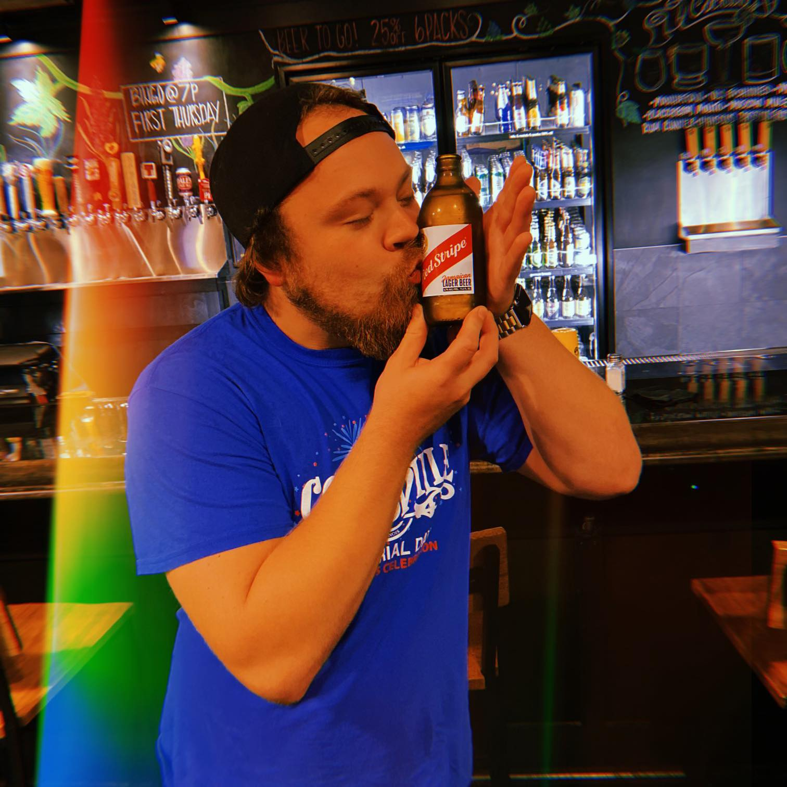

<!DOCTYPE html>
<html lang="en">
    <head>
        <meta name="viewport" content="width=device-width, initial-scale=1.0"
        <meta charset="UTF-8">
        <title>Vincent's Landing</title>
        <link rel="style.css" href="./assets/css/style.css">
    </head>
</html>

<body>
    <header>
        <h1>
            <a href="/">Vincent Toon's Portfolio</a>
        </h1>
        <nav>
            <ul>
                <li>
                    <a href="#about-me">About Me</a>
                </li>
                <li>
                    <a href="#personal-work">Work</a>
                </li>
                <li>
                    <a href="#my-resume">Resume</a>
                </li>
                <li>
                    <a href="#fun-facts">Life Off Screen</a>
                </li>
                <li>
                    <a href="#contact-info">Contact</a>
                </li>
            </ul>
        </nav>
    </header>

<!-- Hero Section -->
    <section class="hero">
        <div class="hero-cta">
            <div class="flex-row">
                <h2>Everything so far.</h2>
            </div>
        </div>
    </section>
<!-- End Hero Section -->

<!-- About Me Section -->
    <section id="about-me" class="personal-info">
        <div class="flex-row">
            <h2 class="section-title primary-border">
                About Me
            </h2>
        </div>
        <!-- Image here -->
        <div class="me-img">
            
        </div>
        <!-- About Me text -->
        <div class="me-text">
            <p>
                Born and raised in Collinsville, IL, and now residing just a few towns over. I've worn many hats in the beer industry, but I aspire for change and this course is the first step out of that world for me in a long time. As an up and coming web developer, I don't have much to reference in terms of previous projects I have done online. However, this page is one of the first steps in my journey to web development. From crafting beer and cocktails to crafting the future of the web, onward and upwards!
            </p>
        </div>
    </section>
<!-- End About Me Section  -->

<!-- Work Section -->
    <section id="personal-work" class="working-web">
        <div class="flex-row">
            <h2 class="section-title primary-border">
                Work
            </h2>
        </div>
        <!-- Run Buddy -->
        <div class="img-to-run-buddy">
            <a href="https://vincenttoon.github.io/run-buddy-new/">
            
            <div class="run-buddy-text">Run Buddy</div>
            <div class="lang-for-rb">Html/Css</div>
            </a>
        </div>
        <!-- Horiseon -->
        <div class="img-to-secondary">
            <a href="https://vincenttoon.github.io/horiseon-zero-dawn/">
            
            <div class="secondary-proj">Horiseon</div>
            <div class="lang-for-sec">Html/Css</div>
            </a>
        </div>
        <!-- Portfolio -->
        <div class="img-to-secondary">
            <a href="https://github.com/Vincenttoon/nacho-portfolio-supreme/">
            
            <div class="secondary-proj">Portfolio</div>
            <div class="lang-for-sec">Html/Css</div>
            </a>"
        </div>
    </section>
    <!-- End Work Section -->

    <!-- Resume -->
    <section id="my-resume" class="documented-actions">
        <div class="flex-row">
            <h2 class="section-title primary border">
                Resume
            </h2>
        </div>
            <!-- Img here -->
        <div class="grad-photo">
            
        </div>
            <!-- Resume here -->
        <div class="me-text">
            <p>
                Insert Resume Here
            </p>
        </div>
    </section>
    <!-- End Resume Section-->

     <!-- Fun Facts Section -->
     <section id="fun-facts" class="fun-facts">
        <div class="flex-row">
            <h2 class="section-title primary-border">
                Life Off Screen
            </h2>
        </div>

        <div class="ff-img-1">
            
            <p>
                I have a dog named Izzy that I adopted in 2020. Coming home from work to her greeting me is one of my greatest pleasures. She loves cheese, walks and hanging with all her friends at Global Brew. She has gone from anxious wreck to absolute joy and I love spending time with her.
            </p>
        </div>

        <div class="ff-img-2">
            
            <p>
                Music has played a major part of my life since before I can even remember. I love making music in my downtime and was in a band in high school. The bond I made with my bandmates then is one of my greatest memories. To this day, playing music is my greatest source of peace and I love the connection you can create with people through music.
            </p>
        </div>

        <div class="ff-img-1">
            
            <p>
                When I travel, I love hitting the great outdoors. I've been camping and hiking all my life and I think it's incredibly important to stay grounded to mother earth. There's something blissful about seeing the world around you and, when given the chance, submerging myself in nature is a must.
            </p>
        </div>

        <div class="ff-img-2">
            
            <p>
                Craft beer has been a passion of mine since the day I turned 21 and became bar manager the next day. I've taught classes and brewed beer at one of our local breweries. I'm also I certified beer server. While a portion about beer in a portfolio seems unprofessional, it is where I've spent my entire professional life so far and I will never forget the knowledge I have obtained, the amazing people I have met throughout the industry, the appreciation I have towards the fine craft of getting something write. Most importantly, I will always appreciate the memories made over a few beers, with friends and strangers alike. 
            </p>
        </div>

     </section>
     <!-- End Fun Facts Section -->

     <!-- Contact Section -->
     <section id="contact-info" class="reach-me">
        <div class="flex-row">
            <h2>
                Contact info
            </h2>
        </div>
        <address>
            Phone: <a href="tel:618.972.9547">618.972.9547</a>
            Email: <a href="mailto://vincenttoon22@gmail.com">vincenttoon22@gmail.com</a>
            Github: <a href="https://github.com/Vincenttoon">Vincent Toon</a>
        </address>
     </section>
     <!-- End Contact Section -->
</body>
